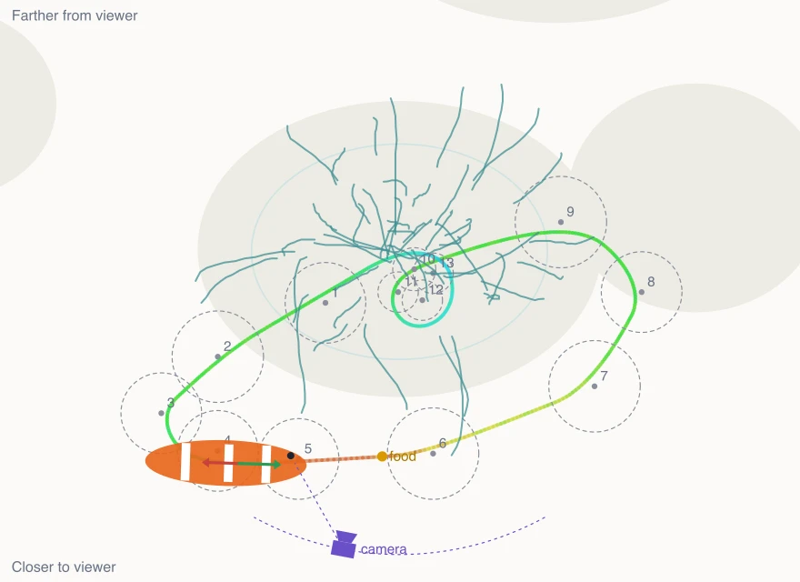

01
Clownfish & anemone
One Python file simulates the fish and anemone, draws them in ASCII, and exports PNG or MP4.
clownfish.pyView full source on GitHub
hz = 0.70 + 1.05 * e
phi += TAU * hz * STEP
push = THRUST * e * (0.30 + 0.70 * np.sin(phi - 0.9) ** 2) # the tail pushes twice per beat
v += (push - DRAG2 * v * abs(v) - DRAG1 * v) * STEP
Drag the timeline to follow the fish, tentacles, and camera.